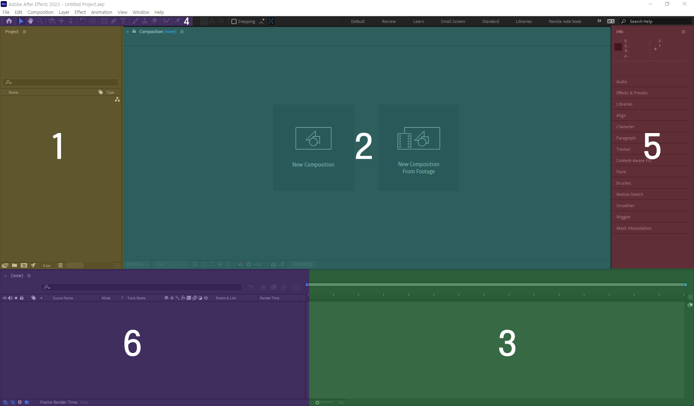

After Effects 화면 설명
After Effects의 주요 패널 및 기능들을 아래 이미지와 함께 설명합니다.

- 1. 프로젝트 패널: 프로젝트에서 사용할 모든 미디어 파일, 컴포지션 등을 관리하는 패널입니다. 미디어를 불러와서 컴포지션에 사용할 수 있습니다.
- 2. 컴포지션 패널: 실제 작업이 이루어지는 패널입니다. 여기서 타임라인에 추가된 요소들을 시각적으로 확인하고 편집할 수 있습니다.
- 3. 타임라인 패널: 미디어 요소와 애니메이션의 시간을 조정하는 패널입니다. 각 레이어의 순서를 바꾸고 애니메이션을 설정할 수 있습니다.
- 4. 툴바: 다양한 도구들이 모여있는 툴바입니다. 텍스트 입력, 쉐이프 그리기, 이동 도구 등을 사용할 수 있습니다.
- 5. 이펙트 및 프리셋 패널: 각종 효과와 프리셋을 검색하고 미디어 요소에 적용할 수 있는 패널입니다.
- 6. 타임코드 및 재생 컨트롤: 프로젝트의 현재 시간을 확인하고, 재생 및 일시 정지, 프레임 이동 등을 할 수 있습니다.